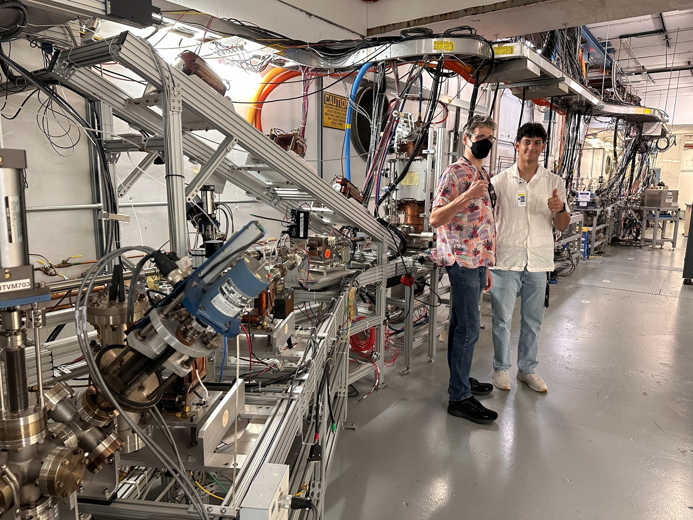

RESEARCH ASSISTANT / 2024
Jefferson Lab
Corrector magnet mounts for the UITF beamline.
Selected as one of 11 students to collaborate directly with an injector scientist at the Thomas Jefferson National Accelerator Facility.
I designed, fabricated, and installed 3D-printed mounts for four corrector magnets on the UITF. I modeled magnetic fields in CST to optimize magnet placement and alignment, then documented the work in an internal LaTeX technical report and presented findings at a laboratory symposium.

DESIGN & FABRICATION